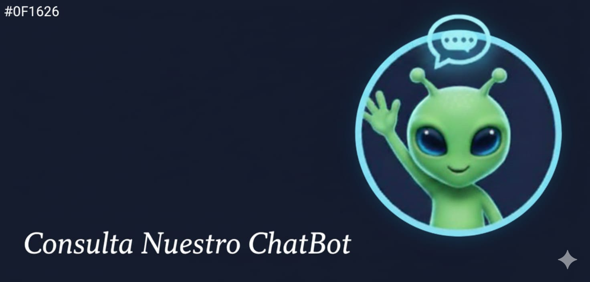

ㅤㅤㅤㅤVISION GENERAL DEL PROGRAMA EN ITSON:
ㅤ
INGENIERIA EN SOFTWARE ITSON

La Ingeniería en Software de ITSON está diseñada para formar profesionistas íntegros, comprometidos, innovadores y emprendedores, capacitados para “idear, diseñar, construir y gestionar eficientemente software competitivo para el mercado internacional” con un modelo educativo basado en competencias profesionales.
La carrera tiene una duración de 8 semestres en modalidad presencial.
Las sedes donde puedes cursarla incluyen, entre otras, el campus de Ciudad Obregón, lo cual puede ser relevante si resides allí o cerca.
QUE DISTINGUE A LA INGENIERIA EN SOFTWARE:
Enfoque en competencias profesionales modernas: no solo programación, sino diseño, calidad, estándares internacionales, gestión de proyectos, emprendimiento.
Duración razonable (8 semestres), modalidad presencial, lo que permite interacción directa con profesores y compañeros.
Amplias salidas laborales: desde empresas, hasta trabajo independiente, consultoría, emprendimiento; lo que ofrece flexibilidad dependiendo de tus intereses.
Formación integral: además de habilidades técnicas, también formación ética, de ciudadanía, emprendimiento, trabajo en equipo, uso de TIC, inglés — lo que favorece una visión más amplia del rol del ingeniero en la sociedad.
Buen nivel de demanda y reconocimiento — lo que puede traducirse en oportunidad de desarrollo profesional si te esfuerzas durante la carrera.
¿PORQUE ELEGIR INGENIERIA EN SOFTWARE?
Si te atrae la programación, la lógica, la creación de soluciones tecnológicas, y además te interesa el diseño, la gestión y quizás emprender algo propio, la Ingeniería en Software en ITSON representa una excelente opción. Ofrece una formación bastante completa — técnica, ética, profesional —, con buenas salidas y oportunidades de desarrollo, tanto en empresas como por cuenta propia.
Es una carrera con reto, exige dedicación, pero también puede abrir muchas puertas. Si te apasiona el software, la innovación y construir soluciones útiles, puede ser una vía ideal para tu futuro.
¿QUE AREAS ABARCA EL PLAN DE ESTUDIOS?

Fundamentos matemáticos y lógico-computacionales: Precálculo, Cálculo, Álgebra Lineal, Matemáticas Discretas, Probabilidad y Estadística, Matemáticas Computacionales, etc. Esto asegura que los estudiantes tengan una base sólida.
Programación y desarrollo: Desde Programación I, II, III, pasando por Estructuras de Datos, Bases de Datos, diseño de software, pruebas, sistemas distribuidos, aplicaciones web y móviles, sistemas empotrados, etc. Esto permite adquirir habilidades de creación de software, bases de datos y sistemas.
Diseño, arquitectura y gestión de software: Asignaturas como Arquitectura de Software, Ingeniería de Requisitos, Administración de Proyectos, Modelado de Procesos, Diseño de Sistemas Interactivos — capacitan para planear, diseñar y administrar proyectos de software.
Calidad, pruebas, metodologías modernas: Con materias como Pruebas de Software, Calidad de Software, Métodos Ágiles de Desarrollo — lo que prepara al estudiante para asegurar estándares de calidad en la industria.
Formación integral y profesional: Inglés progresivo (hasta B1), ética/profesión (axiología), formación humanística/social (salud, ciudadanía), optativas de formación general — lo que contribuye al perfil integral del egresado.<
PERFIL DE EGRESO DE UN INGENIERO DE SOFTWARE

Cuando termines la carrera en ITSON, se espera que seas un profesionista con las siguientes capacidades y competencias:
Diseñar software aplicando metodologías, herramientas y estándares adecuados para resolver problemas particulares.
Administrar proyectos de desarrollo de software, aplicando modelos, procesos y estándares que aseguren calidad total.
Analizar requisitos, diseñar soluciones a medida, desarrollar, probar y entregar software adaptable, robusto y competitivo.
ener la opción de integrarse a empresas de desarrollo de software, a departamentos de TI / desarrollo dentro de organizaciones públicas o privadas, o trabajar por cuenta propia (freelance) — incluso crear su propia empresa de desarrollo.
Además, el programa busca formar profesionales emprendedores, con sentido social, éticos, con habilidades de comunicación, trabajo en equipo, compromiso social, capacidad de aprendizaje permanente, responsabilidad, y competencia en inglés a nivel internacional.
